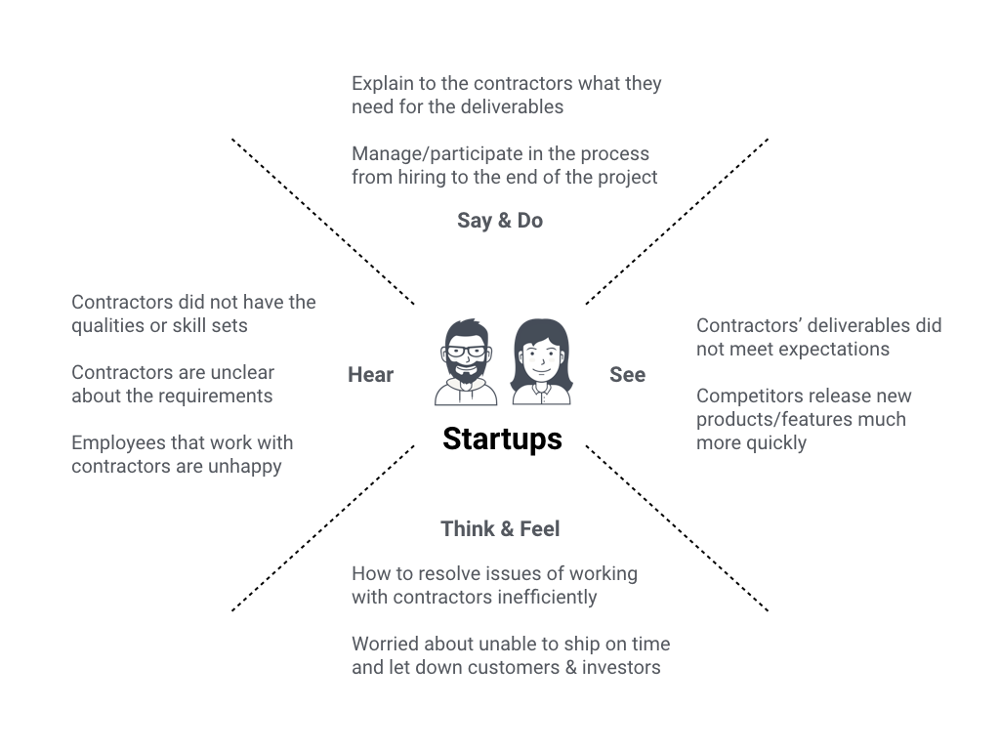
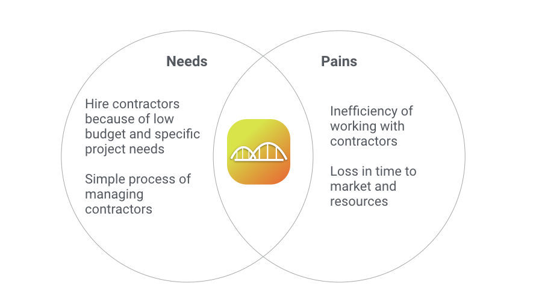

Phase 2. Understand The Persona
After the initial discovery interviews, we decided to come up with a solution to solve issues in managing contractors and defined startups as our target users.

Understand the behaviors of our target users when it comes to working with contractors. Since each startup sometimes defines roles differently, we see the entire company as our target user in this case.

Using the empathy map and venn diagram helped us to get a better understanding of what our target users are looking for - a tool that is affordable and easy to use for everyone within the startup, and can manage the process from recruiting till the end of the project.